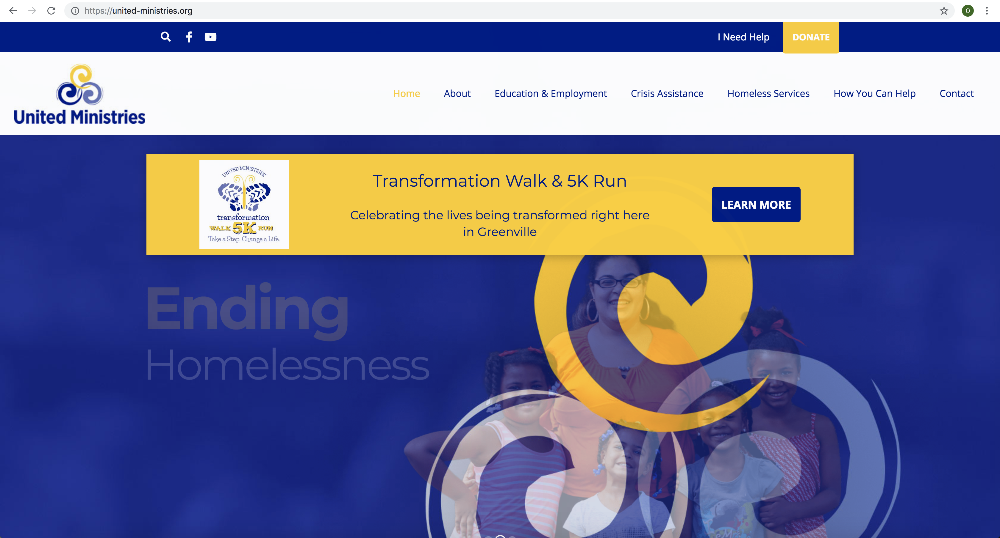
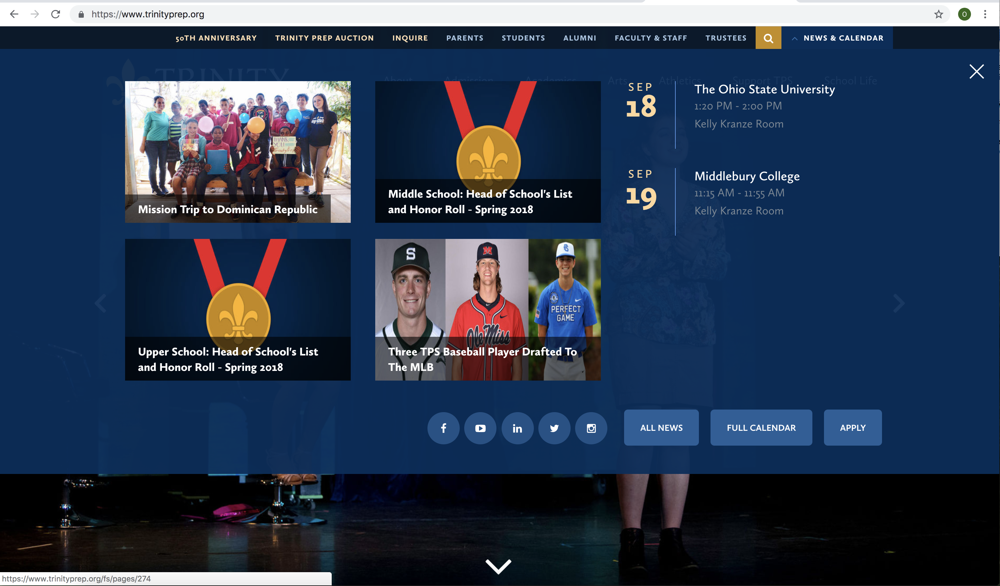

The Research
What information can be learned?
Primary Research
All design problems go through three main phases: inspiration, ideation, and implementation. Research is part of the ideation phase. We must learn everything we can about our organization before we know enough to come up with solutions. The ideation process requires that all trails be followed to check every possible solution.
The first part of the research is gathering all of the information about the organization. An emphasis is given to finding any existing advertisements and announcements as well as collecting images of the current website. These images are used to clarify what has and has not worked for the organization in the past.
Secondary Research
Step 1: Explore the most recent news in your client's field: internet, newspapers, magazines, and journals.
According to most news articles, it is impossible to get a job without education. This is the situation that is becoming increasingly more common in this day and age. Many more students are forced into college than in the past. And, those who cannot afford a degree are starting with much lower chances at success than those who make it into college.
Housing rates have increased dramatically in recent years. In order to afford housing, a job that pays well is essential. In some places, housing is way too expensive. A minimum wage job will not cover the cost of a two bedroom apartment in any state in the US. In only five states can a minimum wage job earn an employee a one bedroom apartment. These two articles by the Washington Post and New York City and State agree that housing costs are a major impact on increasing homelessness. This is often how homelessness begins; once you are out of a house it is very hard to make it back into one without the aid from a friend, loved one, or an organization. New York Times Magazine Article.
Most homeless deaths come from addiction or a lack of medical care. Without the ability to go to a doctor, homeless people often die form preventable causes. Washington Post Article.
There is a distinction between temporary homelessness and chronic homelessness. Temporary is easier to change: a job and/or education will be a huge step, along with housing. Chronic homelessness is when someone needs a permanent solution because they are incapable of ever maintaining their own house, whether for mental or physical reasons. More information on this below.
Step 2: Try to find recent innovations in your client's field: technical, behavioral, or cultural.
Utah made a Housing First Program. This program is for the chronic homeless who cannot care for themselves. The Housing FIrst program provides free housing with no strings attached. The cost was calculated later; it was the same to house 242 chronically homeless and provide free medical assistance as it was to take food and blankets and other supplies around the city on a dialy basis along with the cost of preventable emergency room visits. Mother Jones Article.
New York City is always looking for new solutions to help the massive homeless population there. The most recent information is that NYC plans to replace all traditional homeless shelters by 2023. They want to renovate old hotels and apartment buildings so that they hold more people while still providing a safe housing option. Some of these residents will be temporary, while others are more permanent. LA Times Article
Step 3: Look at other solutions. Which worked? Which didn't? Any similar solutions?
United Ministries has a very straightforward CTA in the top corner. One can get help or donate. They also have very specific categories in their menu. This would help the user find information very quickly.
Haven of Rest has a good seperation on their website with two CTAs of giving help and getting help. The different CTAs are very clear and effective. Miracle Hill has a website that is geared more for those who are giving help than those who need it.
Becasue of the two sections of audiences it may be good to guide the user as soon as he or she enters the website. This could be done the way Student Leadership Univeristy does it or the way Rolling Thunder River Company does it, with the menu still showing.
Trinity Prep has a calendar that would be very effective to show the dates of various volunteer events or drives through Lighthouse.
Step 4: Any data that is relevant.
The Point in Time Survey found 512 homeless people in Lakeland, Florida in May of 2018. In all of Florida, they found 32,109 homeless people. In Orange, Osceola, and Seminole counties, all very close to Lakeland, there are 2,053 homeless.
The Mayor of Lakeland has proposed a four step plan to reduce homelessness in the city. The first step in his program is to create two Outreach Positions. These people whould each be given a portion of Lakeland, and he would be responsible for connecting with all of the homeless and ensuring their knowledge of the programs in the area. Lakeland Now Article.
Lighthouse Ministries itself has been running for 41 years and is still growing in facilities and in the number of people it assists daily. In 2003, they were able to open up the Preschool program that allows the parents with young children to work a job or earn their education while not having to pay for childcare.
The Lighthouse residential program requires that all residents finish their GED at the minimum. As seen above, this dramatically increases the chances of improving their lifestyle. All graduates of the residential program are required to have saved 80 percent of their paycheck for the last two months. This allows them to start their new life with their heads above water.